CODING AGENTS AS PIXEL WORLD MODELS
traex/GPT-6.1-Sol · common50_0021
点击播放 · 原生 RGB 像素
逐轮保存的候选
回放视频、检查图与代码变化。
每份候选均可单独播放。实际图片检查记录在下方工具轨迹中。
候选 01播放与检查图
点击播放 · 原生 RGB 像素
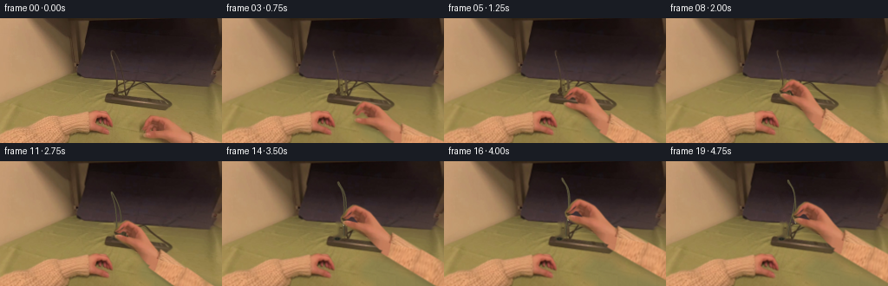
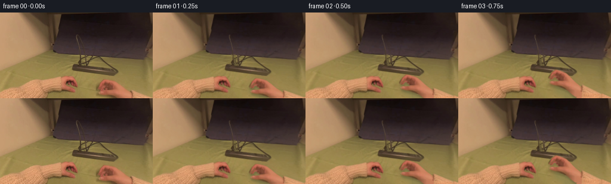
展开代码变化
--- 上一保存版本
+++ 本次保存版本
@@ -0,0 +1,216 @@
+from pathlib import Path
+import math
+import numpy as np
+from PIL import Image, ImageDraw, ImageFilter
+import cv2
+from scipy.interpolate import CubicSpline
+import artifact_io
+
+ROOT=Path(__file__).resolve().parent
+W,H=256,144
+S=4
+im=np.asarray(Image.open(ROOT/'first_frame.png').convert('RGB'))
+
+def polygon(points, size=(W,H), blur=0.35):
+ a=Image.new('L',(size[0]*S,size[1]*S))
+ ImageDraw.Draw(a).polygon([(round(x*S),round(y*S)) for x,y in points],fill=255)
+ if blur:a=a.filter(ImageFilter.GaussianBlur(blur*S))
+ return np.asarray(a.resize(size,Image.Resampling.LANCZOS)).astype(np.float32)/255
+
+# The fingers, palm and knit cuff are photographed pixels from the supplied image.
+hand_poly=[(162.7,126.8),(164,123),(166.8,117.7),(171.7,112.7),
+ (175,111.9),(180,112.8),(185,113.8),(192,115.9),(198.5,120.4),
+ (206.5,127.1),(213.9,132),(219.3,135),(221.1,145),(219.3,154.5),
+ (212,153.3),(205,149.4),(198.5,145),(189.8,142),(180,139.9),
+ (173.1,138.9),(167.1,137.5),(165.1,135.9),(165.3,134.1),
+ (169.2,132.3),(176.2,132),(182.2,130.8),(178.6,128),
+ (175.5,125.4),(172.5,125.2),(170.4,128.3),(168.1,130.1),
+ (165.8,129.4),(168.5,125.1),(171.8,121.7),(173.2,119.6),
+ (170,121.5),(167.4,125.1),(165.5,128.1),(163.4,129)]
+EW,EH=424,260
+hand_alpha=polygon(hand_poly,(EW,EH),0.45)
+sleeve_poly=[(220.9,131.7),(417,188.9),(409,216.7),(214.2,156.4)]
+sleeve_alpha=polygon(sleeve_poly,(EW,EH),0.45)
+# Restore the visible cuff boundary from the photograph.
+yy,xx=np.mgrid[:EH,:EW].astype(np.float32)
+u=(xx-219)*.956+(yy-144)*.293
+v=-(xx-219)*.293+(yy-144)*.956
+# Continue only the unseen length of the photographed knit sleeve. Sample its
+# wool stitches from the other sleeve, along the direction of the weave.
+tx=18+np.mod(u+13,65)
+ty=136-.22*tx+v*.36
+texture=cv2.remap(im,tx.astype(np.float32),ty.astype(np.float32),cv2.INTER_CUBIC,borderMode=cv2.BORDER_REFLECT_101).astype(np.float32)
+texture*=np.array([1.02,.996,.973],np.float32)
+texture=np.clip(texture,0,255)
+source=texture.copy()
+source[:H,:W]=im
+# Below the source crop, continue the palm with its own adjacent skin pixels.
+for y in range(H,158):
+ for x in range(196,223):
+ sx=np.clip(x,198,218)
+ sy=max(137,143-int((y-144)*.13))
+ source[y,x]=im[sy,sx].astype(float)*(1-.002*(y-144))
+alpha=np.maximum(hand_alpha,sleeve_alpha)
+# Lower sleeve overlaps the palm only at the cuff.
+
+# A clean green textile plate for the area uncovered by the moving arm.
+remove=np.uint8(alpha[:H,:W]>.04)*255
+remove=cv2.dilate(remove,np.ones((5,5),np.uint8))
+# Include its original soft table shadow, not the left resting hand.
+shadow_poly=[(157,126),(159,118),(171,108),(193,111),(210,126),(221,130),(256,142),(256,144),(173,144),(159,137)]
+remove=np.maximum(remove,(polygon(shadow_poly,blur=0)*255).astype(np.uint8))
+clean=cv2.inpaint(im,remove,5,cv2.INPAINT_TELEA)
+# Add back the small variations of cloth, rather than a featureless fill.
+fy,fx=np.mgrid[:H,:W].astype(np.float32)
+stx=134+np.mod(fx-156,22)
+sty=np.clip(fy,101,143)
+cloth=cv2.remap(im,stx,sty,cv2.INTER_CUBIC,borderMode=cv2.BORDER_REFLECT_101).astype(np.float32)
+cloth_detail=cloth-cv2.GaussianBlur(cloth,(0,0),2.3)
+plate=clean.astype(np.float32)+cloth_detail*.44*(remove[...,None]/255)
+# Cloth value trends smoothly toward the bare right edge.
+inside=(remove>0)&(fy>=111)
+base=(np.array([135.,132.,79.])+ (fx[...,None]-160)*np.array([-.06,-.08,-.015])+(fy[...,None]-120)*np.array([-.12,-.13,-.08]))
+blend=np.clip(cv2.distanceTransform(remove,cv2.DIST_L2,5)/9,0,1)[...,None]*.55
+plate=plate*(1-blend)+np.clip(base+cloth_detail*.55,0,255)*blend
+plate=np.uint8(np.clip(plate,0,255))
+
+# The small moulded plug and flexible lead are isolated from the same photograph.
+plugpoly=[(130.1,88.2),(130.1,82.6),(131.9,80.5),(134.5,78.8),(136,80.5),(136.9,88),(135.5,89.5),(131.6,89.2)]
+pa=polygon(plugpoly,blur=.28)
+cord_points=np.array([(133.4,82.9),(134.0,74.5),(133.5,63.2),(132.2,53.3),
+ (129.7,44),(128.1,38.1),(128.1,37.3),(130,39.8),(133.2,45.8),
+ (136.7,54.4),(139,64.4),(140,74.5),(140.7,85.8)],np.float32)
+def curve(points,n=200):
+ dist=np.r_[0,np.cumsum(np.linalg.norm(np.diff(points,axis=0),axis=1))]
+ return CubicSpline(dist,points,axis=0)(np.linspace(0,dist[-1],n))
+cp=curve(cord_points)
+cm=Image.new('L',(W*S,H*S));d=ImageDraw.Draw(cm)
+d.line([(round(x*S),round(y*S)) for x,y in cp],fill=255,width=round(2.0*S),joint='curve')
+cm=cm.filter(ImageFilter.GaussianBlur(.25*S))
+ca=np.asarray(cm.resize((W,H),Image.Resampling.LANCZOS)).astype(np.float32)/255
+objmask=np.uint8(np.maximum(pa,ca)>.03)*255
+objmask=cv2.dilate(objmask,np.ones((3,3),np.uint8))
+empty=cv2.inpaint(plate,objmask,3,cv2.INPAINT_TELEA)
+# Empty socket on the front-left of the strip, exposed only on lifting.
+socket=Image.fromarray(empty).resize((W*S,H*S),Image.Resampling.BICUBIC)
+sd=ImageDraw.Draw(socket)
+sd.ellipse([129.2*S,87.4*S,137.3*S,91.7*S],fill=(70,65,47))
+sd.ellipse([130.1*S,88.0*S,136.6*S,91.0*S],fill=(44,42,33))
+sd.line([(131.5*S,89.0*S),(131.6*S,90.1*S)],fill=(17,20,18),width=2)
+sd.line([(134.4*S,89.2*S),(134.6*S,90.4*S)],fill=(18,20,18),width=2)
+empty_socket=np.asarray(socket.resize((W,H),Image.Resampling.LANCZOS))
+
+# High resolution foreground sampling for clean subpixel silhouettes.
+source_hi=cv2.resize(np.uint8(np.clip(source,0,255)),(EW*S,EH*S),interpolation=cv2.INTER_CUBIC)
+alpha_hi=cv2.resize(alpha,(EW*S,EH*S),interpolation=cv2.INTER_CUBIC)
+X,Y=np.meshgrid(np.arange(W*S,dtype=np.float32)/S,np.arange(H*S,dtype=np.float32)/S)
+
+def ease(z):
+ z=np.clip(z,0,1);return z*z*(3-2*z)
+
+def finger_deform(x,y,c):
+ # A small anatomically local flexion closes the real index/thumb pinch.
+ index=np.exp(-((x-166.0)/7.0)**2-((y-123.5)/7.5)**2)
+ thumb=np.exp(-((x-172.0)/10.0)**2-((y-134.6)/4.5)**2)
+ return c*(.6*index+.25*thumb),c*(1.45*index-2.45*thumb)
+
+def moving_hand(target,theta,scale,closure):
+ a=math.radians(theta);co,si=math.cos(a),math.sin(a)
+ x=(co*(X-target[0])+si*(Y-target[1]))/scale+166.2
+ y=(-si*(X-target[0])+co*(Y-target[1]))/scale+130.0
+ sx,sy=x.copy(),y.copy()
+ for _ in range(6):
+ dx,dy=finger_deform(sx,sy,closure)
+ sx=x-dx;sy=y-dy
+ rgb=cv2.remap(source_hi,(sx*S).astype(np.float32),(sy*S).astype(np.float32),cv2.INTER_CUBIC,borderMode=cv2.BORDER_CONSTANT)
+ aa=cv2.remap(alpha_hi,(sx*S).astype(np.float32),(sy*S).astype(np.float32),cv2.INTER_LINEAR,borderMode=cv2.BORDER_CONSTANT)
+ return rgb.astype(np.float32),np.clip(aa,0,1)
+
+plug_hi=cv2.resize(im,(W*S,H*S),interpolation=cv2.INTER_CUBIC)
+plug_alpha_hi=cv2.resize(pa,(W*S,H*S),interpolation=cv2.INTER_CUBIC)
+
+def plug_layer(delta,rotation,scale):
+ a=math.radians(rotation);co,si=math.cos(a),math.sin(a)
+ sx=(co*(X-133.5-delta[0])+si*(Y-84.5-delta[1]))/scale+133.5
+ sy=(-si*(X-133.5-delta[0])+co*(Y-84.5-delta[1]))/scale+84.5
+ rgb=cv2.remap(plug_hi,(sx*S).astype(np.float32),(sy*S).astype(np.float32),cv2.INTER_CUBIC,borderMode=cv2.BORDER_CONSTANT)
+ aa=cv2.remap(plug_alpha_hi,(sx*S).astype(np.float32),(sy*S).astype(np.float32),cv2.INTER_LINEAR,borderMode=cv2.BORDER_CONSTANT)
+ return rgb.astype(np.float32),np.clip(aa,0,1)
+
+def draw_cord_and_pins(bg,delta,amount):
+ canvas=Image.fromarray(np.uint8(np.clip(bg,0,255)))
+ d=ImageDraw.Draw(canvas)
+ pts=cord_points.copy()
+ # One lead end follows the grasp; the other remains attached off to the side.
+ weights=np.array([1, .98,.91,.83,.75,.72,.72,.71,.68,.60,.45,.20,0.],np.float32)
+ pts+=weights[:,None]*np.asarray(delta)[None,:]
+ pts[:,0]+=np.array([0,0,1,2,2,1,1,1,2,2,1,0,0])*amount
+ path=curve(pts)
+ outer=[tuple((v*S).tolist()) for v in path]
+ d.line(outer,fill=(70,66,47),width=6,joint='curve')
+ d.line([(float((x-.23)*S),float(y*S)) for x,y in path],fill=(105,96,67),width=2,joint='curve')
+ # The blades emerge below the body as it clears the receptacle.
+ visible=ease(amount*4)
+ if visible>0:
+ ang=math.radians(-9*amount)
+ co,si=math.cos(ang),math.sin(ang)
+ def point(x,y):
+ xx=x-133.5;yy=y-84.5
+ return ((133.5+delta[0]+co*xx-si*yy)*S,(84.5+delta[1]+si*xx+co*yy)*S)
+ for x in (132.0,135.0):
+ p=[point(x-.46,88.5),point(x+.48,88.5),point(x+.48,88.5+4.1*visible),point(x-.46,88.5+4.1*visible)]
+ d.polygon(p,fill=(154,151,126))
+ d.line([point(x-.20,89),point(x-.20,88.5+4.1*visible)],fill=(197,192,163),width=1)
+ return np.asarray(canvas).astype(np.float32)
+
+def over(bg,rgb,a):
+ return bg*(1-a[...,None])+rgb*a[...,None]
+
+frames=[]
+for i in range(20):
+ if i==0:
+ frames.append(im.copy());continue
+ reach=ease(i/7.0)
+ close=ease((i-5)/4.0)
+ lift=ease((i-10)/6.0)
+ settle=ease((i-16)/3.0)
+ delta=np.array([10*lift+6*settle,-24*lift+3*settle])
+ target=np.array([166.2,130.0])+(np.array([133.5,84.5])-np.array([166.2,130.0]))*reach+delta
+ rotation=19*reach-7*lift+1.3*settle
+ scale=1-.025*reach+.09*lift
+ socket_amount=ease((i-10)/2)
+ b=empty.astype(np.float32)*(1-socket_amount)+empty_socket.astype(np.float32)*socket_amount
+ b=cv2.resize(b,(W*S,H*S),interpolation=cv2.INTER_CUBIC)
+ if i<=10:
+ # Keep the entire photographed cable until there is an actual pull.
+ cahi=cv2.resize(ca,(W*S,H*S),interpolation=cv2.INTER_CUBIC)
+ b=over(b,plug_hi.astype(np.float32),np.clip(cahi,0,1))
+ else:
+ b=draw_cord_and_pins(b,delta,lift)
+ p_rgb,p_alpha=plug_layer(delta,-9*lift,1+.06*lift)
+ b=over(b,p_rgb,p_alpha)
+ hand,ha=moving_hand(target,rotation,scale,close)
+ # Soft contact/cast shadow changes naturally as the forearm rises.
+ sh=cv2.GaussianBlur(ha,(0,0),S*(1.6+lift*1.2))
+ shift=np.float32([[1,0,S*1.1],[0,1,S*(3.6+lift*2)]])
+ sh=cv2.warpAffine(sh,shift,(W*S,H*S),flags=cv2.INTER_LINEAR)
+ b=b*(1-sh[...,None]*(.19-.055*lift))
+ b=over(b,hand,ha)
+ b=np.uint8(np.clip(cv2.resize(b,(W,H),interpolation=cv2.INTER_AREA),0,255))
+ # Small, coherent egocentric settling; no invented background motion.
+ cam=ease(i/7)*.008
+ M=cv2.getRotationMatrix2D((133,83),.10*math.sin(i*.24),1+cam)
+ M[0,2]+=.22*math.sin(i*.31)
+ M[1,2]+=.14*math.sin(i*.43)
+ b=cv2.warpAffine(b,M,(W,H),flags=cv2.INTER_CUBIC,borderMode=cv2.BORDER_REFLECT_101)
+ frames.append(b)
+frames=np.stack(frames).astype(np.uint8)
+artifact_io.save(frames,ROOT)
+# Larger contact sheet for visual review stays local to this workspace.
+contact=Image.new('RGB',(5*512,4*288))
+for i,f in enumerate(frames):
+ tile=Image.fromarray(f).resize((512,288),Image.Resampling.NEAREST)
+ ImageDraw.Draw(tile).text((5,5),str(i),fill='white')
+ contact.paste(tile,((i%5)*512,(i//5)*288))
+contact.save(ROOT/'.tmp'/'all_frames.png')
+Image.fromarray(plate).resize((1024,576)).save(ROOT/'.tmp'/'plate.png')
候选 02播放与检查图
点击播放 · 原生 RGB 像素
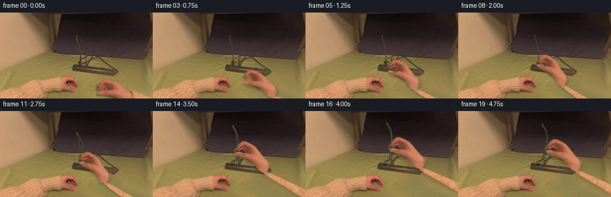
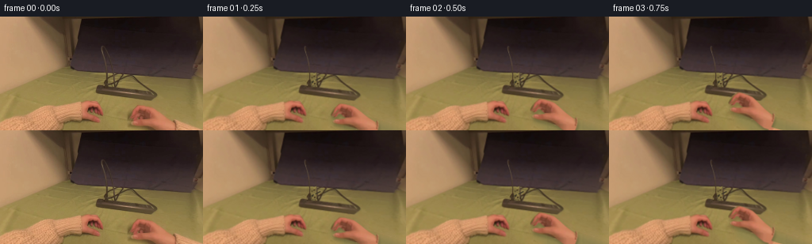
展开代码变化
--- 上一保存版本
+++ 本次保存版本
@@ -29,7 +29,7 @@
(170,121.5),(167.4,125.1),(165.5,128.1),(163.4,129)]
EW,EH=424,260
hand_alpha=polygon(hand_poly,(EW,EH),0.45)
-sleeve_poly=[(220.9,131.7),(417,188.9),(409,216.7),(214.2,156.4)]
+sleeve_poly=[(220.7,132.6),(222.4,134.2),(223.2,140),(222.2,145),(220.5,150.7),(417,188.9),(409,216.7),(217.5,155.4)]
sleeve_alpha=polygon(sleeve_poly,(EW,EH),0.45)
# Restore the visible cuff boundary from the photograph.
yy,xx=np.mgrid[:EH,:EW].astype(np.float32)
@@ -91,6 +91,25 @@
objmask=np.uint8(np.maximum(pa,ca)>.03)*255
objmask=cv2.dilate(objmask,np.ones((3,3),np.uint8))
empty=cv2.inpaint(plate,objmask,3,cv2.INPAINT_TELEA)
+# Patch the narrow region under the extracted lead with neighboring surface
+# pixels (inpainting alone can propagate the cable's green/dark edge).
+for y in range(32,89):
+ for x in range(125,143):
+ if objmask[y,x] and y < 87:
+ if y < 71:
+ y0=np.clip(y-1 if x>131 else y,0,H-1)
+ a=plate[y0,124].astype(float)
+ b=plate[min(y+1,H-1),145].astype(float)
+ val=a*(1-(x-124)/21)+b*((x-124)/21)
+ else:
+ val=plate[y,124].astype(float)*.6+plate[y,123].astype(float)*.4
+ empty[y,x]=np.uint8(val)
+# Retain the crossing lead which is not being unplugged.
+repair=Image.fromarray(empty).resize((W*S,H*S),Image.Resampling.BICUBIC)
+rd=ImageDraw.Draw(repair)
+rd.line([(130.5*S,85.7*S),(143.8*S,79.5*S),(148*S,77.3*S)],fill=(58,54,39),width=5,joint='curve')
+rd.line([(134.6*S,85.5*S),(139.2*S,82.9*S)],fill=(68,61,42),width=5)
+empty=np.asarray(repair.resize((W,H),Image.Resampling.LANCZOS))
# Empty socket on the front-left of the strip, exposed only on lifting.
socket=Image.fromarray(empty).resize((W*S,H*S),Image.Resampling.BICUBIC)
sd=ImageDraw.Draw(socket)
@@ -147,8 +166,8 @@
pts[:,0]+=np.array([0,0,1,2,2,1,1,1,2,2,1,0,0])*amount
path=curve(pts)
outer=[tuple((v*S).tolist()) for v in path]
- d.line(outer,fill=(70,66,47),width=6,joint='curve')
- d.line([(float((x-.23)*S),float(y*S)) for x,y in path],fill=(105,96,67),width=2,joint='curve')
+ d.line(outer,fill=(67,63,46),width=6,joint='curve')
+ d.line([(float((x-.23)*S),float(y*S)) for x,y in path],fill=(83,77,55),width=2,joint='curve')
# The blades emerge below the body as it clears the receptacle.
visible=ease(amount*4)
if visible>0:
候选 03播放与检查图
点击播放 · 原生 RGB 像素
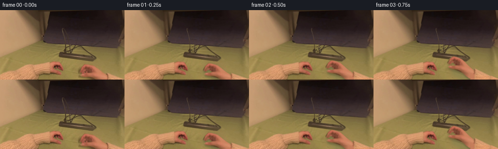
展开代码变化
--- 上一保存版本
+++ 本次保存版本
@@ -29,7 +29,7 @@
(170,121.5),(167.4,125.1),(165.5,128.1),(163.4,129)]
EW,EH=424,260
hand_alpha=polygon(hand_poly,(EW,EH),0.45)
-sleeve_poly=[(220.7,132.6),(222.4,134.2),(223.2,140),(222.2,145),(220.5,150.7),(417,188.9),(409,216.7),(217.5,155.4)]
+sleeve_poly=[(220.9,131.7),(417,188.9),(409,216.7),(214.2,156.4)]
sleeve_alpha=polygon(sleeve_poly,(EW,EH),0.45)
# Restore the visible cuff boundary from the photograph.
yy,xx=np.mgrid[:EH,:EW].astype(np.float32)
@@ -104,6 +104,9 @@
else:
val=plate[y,124].astype(float)*.6+plate[y,123].astype(float)*.4
empty[y,x]=np.uint8(val)
+for y in range(73,87):
+ for x in range(128,141):
+ empty[y,x]=plate[y,124]
# Retain the crossing lead which is not being unplugged.
repair=Image.fromarray(empty).resize((W*S,H*S),Image.Resampling.BICUBIC)
rd=ImageDraw.Draw(repair)
@@ -194,7 +197,7 @@
lift=ease((i-10)/6.0)
settle=ease((i-16)/3.0)
delta=np.array([10*lift+6*settle,-24*lift+3*settle])
- target=np.array([166.2,130.0])+(np.array([133.5,84.5])-np.array([166.2,130.0]))*reach+delta
+ target=np.array([166.2,130.0])+(np.array([135.3,84.2])-np.array([166.2,130.0]))*reach+delta
rotation=19*reach-7*lift+1.3*settle
scale=1-.025*reach+.09*lift
socket_amount=ease((i-10)/2)
候选 04播放与检查图
点击播放 · 原生 RGB 像素
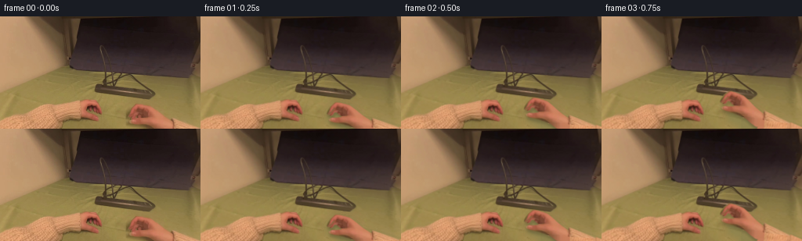
展开代码变化
--- 上一保存版本
+++ 本次保存版本
@@ -201,13 +201,12 @@
rotation=19*reach-7*lift+1.3*settle
scale=1-.025*reach+.09*lift
socket_amount=ease((i-10)/2)
- b=empty.astype(np.float32)*(1-socket_amount)+empty_socket.astype(np.float32)*socket_amount
- b=cv2.resize(b,(W*S,H*S),interpolation=cv2.INTER_CUBIC)
if i<=10:
- # Keep the entire photographed cable until there is an actual pull.
- cahi=cv2.resize(ca,(W*S,H*S),interpolation=cv2.INTER_CUBIC)
- b=over(b,plug_hi.astype(np.float32),np.clip(cahi,0,1))
+ # All installed objects are exactly photographed before the lift.
+ b=cv2.resize(plate.astype(np.float32),(W*S,H*S),interpolation=cv2.INTER_CUBIC)
else:
+ b=empty.astype(np.float32)*(1-socket_amount)+empty_socket.astype(np.float32)*socket_amount
+ b=cv2.resize(b,(W*S,H*S),interpolation=cv2.INTER_CUBIC)
b=draw_cord_and_pins(b,delta,lift)
p_rgb,p_alpha=plug_layer(delta,-9*lift,1+.06*lift)
b=over(b,p_rgb,p_alpha)
可观测工具轨迹
实际执行的命令与返回图片。
命令 1exit 0
/bin/bash -lc "ls -la && cat prompt.txt && printf '\\n---RULES---\\n' && cat GENERATION_RULES.md"
命令 2exit 0
/bin/bash -lc "cat task_spec.json && cat artifact_io.py && python - <<'PY'
from PIL import Image
im=Image.open('first_frame.png');print(im.size);im.resize((1024,576)).save('.tmp/enlarged.png')
PY"命令 3exit 0
/bin/bash -lc "python - <<'PY'
import importlib.util
for m in ['cv2','scipy']:
print(m, bool(importlib.util.find_spec(m)))
from PIL import Image
im=Image.open('first_frame.png');im.crop((115,64,201,107)).resize((860,430)).save('.tmp/plug.png')
PY"命令 4exit 0
/bin/bash -lc "python - <<'PY'
from PIL import Image, ImageDraw
im=Image.open('first_frame.png').resize((1024,576))
d=ImageDraw.Draw(im)
for x in range(0,256,10):
d.line((x*4,0,x*4,575),fill=(220,220,220),width=1);d.text((x*4+2,0),str(x),fill=(255,255,255))
for y in range(0,144,10):
d.line((0,y*4,1023,y*4),fill=(220,220,220),width=1);d.text((0,y*4),str(y),fill=(255,255,255))
im.save('.tmp/grid.png')
PY"命令 5exit 0
/bin/bash -lc "python - <<'PY'
from PIL import Image
Image.open('first_frame.png').crop((156,107,256,144)).resize((1000,370)).save('.tmp/right.png')
Image.open('first_frame.png').crop((85,102,135,137)).resize((600,420)).save('.tmp/left.png')
PY"命令 6exit 0
/bin/bash -lc "python - <<'PY'
from PIL import Image,ImageDraw
im=Image.open('first_frame.png').crop((157,108,225,144)).resize((952,504))
d=ImageDraw.Draw(im)
for x in range(160,225,5):
d.line(((x-157)*14,0,(x-157)*14,504),fill='white',width=1); d.text(((x-157)*14,0),str(x),fill='white')
for y in range(110,144,5):
d.line((0,(y-108)*14,952,(y-108)*14),fill='white',width=1);d.text((0,(y-108)*14),str(y),fill='white')
im.save('.tmp/rgrid.png')
PY"命令 7exit 1
/bin/bash -lc "cat > generate.py <<'PY'
from pathlib import Path
import math
import numpy as np
from PIL import Image, ImageDraw, ImageFilter
import cv2
from scipy.interpolate import CubicSpline
import artifact_io
ROOT=Path(__file__).resolve().parent
W,H=256,144
S=4
im=np.asarray(Image.open(ROOT/'first_frame.png').convert('RGB'))
def polygon(points, size=(W,H), blur=0.35):
a=Image.new('L',(size[0]*S,size[1]*S))
ImageDraw.Draw(a).polygon([(round(x*S),round(y*S)) for x,y in points],fill=255)
if blur:a=a.filter(ImageFilter.GaussianBlur(blur*S))
return np.asarray(a.resize(size,Image.Resampling.LANCZOS)).astype(np.float32)/255
# The fingers, palm and knit cuff are photographed pixels from the supplied image.
hand_poly=[(162.7,126.8),(164,123),(166.8,117.7),(171.7,112.7),
(175,111.9),(180,112.8),(185,113.8),(192,115.9),(198.5,120.4),
(206.5,127.1),(213.9,132),(219.3,135),(221.1,145),(219.3,154.5),
(212,153.3),(205,149.4),(198.5,145),(189.8,142),(180,139.9),
(173.1,138.9),(167.1,137.5),(165.1,135.9),(165.3,134.1),
(169.2,132.3),(176.2,132),(182.2,130.8),(178.6,128),
(175.5,125.4),(172.5,125.2),(170.4,128.3),(168.1,130.1),
(165.8,129.4),(168.5,125.1),(171.8,121.7),(173.2,119.6),
(170,121.5),(167.4,125.1),(165.5,128.1),(163.4,129)]
EW,EH=424,260
hand_alpha=polygon(hand_poly,(EW,EH),0.45)
sleeve_poly=[(220.9,131.7),(417,188.9),(409,216.7),(214.2,156.4)]
sleeve_alpha=polygon(sleeve_poly,(EW,EH),0.45)
# Restore the visible cuff boundary from the photograph.
yy,xx=np.mgrid[:EH,:EW].astype(np.float32)
u=(xx-219)*.956+(yy-144)*.293
v=-(xx-219)*.293+(yy-144)*.956
# Continue only the unseen length of the photographed knit sleeve. Sample its
# wool stitches from the other sleeve, along the direction of the weave.
tx=18+np.mod(u+13,65)
ty=136-.22*tx+v*.36
texture=cv2.remap(im,tx.astype(np.float32),ty.astype(np.float32),cv2.INTER_CUBIC,borderMode=cv2.BORDER_REFLECT_101).astype(np.float32)
texture*=np.array([1.02,.996,.973],np.float32)
texture=np.clip(texture,0,255)
source=texture.copy()
source[:H,:W]=im
# Below the source crop, continue the palm with its own adjacent skin pixels.
for y in range(H,158):
for x in range(196,223):
sx=np.clip(x,198,218)
sy=max(137,143-int((y-144)*.13))
source[y,x]=im[sy,sx].astype(float)*(1-.002*(y-144))
alpha=np.maximum(hand_alpha,sleeve_alpha)
# Lower sleeve overlaps the palm only at the cuff.
# A clean green textile plate for the area uncovered by the moving arm.
remove=np.uint8(alpha[:H,:W]>.04)*255
remove=cv2.dilate(remove,np.ones((5,5),np.uint8))
# Include its original soft table shadow, not the left resting hand.
shadow_poly=[(157,126),(159,118),(171,108),(193,111),(210,126),(221,130),(256,142),(256,144),(173,144),(159,137)]
remove=np.maximum(remove,(polygon(shadow_poly,blur=0)*255).astype(np.uint8))
clean=cv2.inpaint(im,remove,5,cv2.INPAINT_TELEA)
# Add back the small variations of cloth, rather than a featureless fill.
fy,fx=np.mgrid[:H,:W].astype(np.float32)
stx=134+np.mod(fx-156,22)
sty=np.clip(fy,101,143)
cloth=cv2.remap(im,stx,sty,cv2.INTER_CUBIC,borderMode=cv2.BORDER_REFLECT_101).astype(np.float32)
cloth_detail=cloth-cv2.GaussianBlur(cloth,(0,0),2.3)
plate=clean.astype(np.float32)+cloth_detail*.44*(remove[...,None]/255)
# Cloth value trends smoothly toward the bare right edge.
inside=(remove>0)&(fy>=111)
base=(np.array([135.,132.,79.])+ (fx[...,None]-160)*np.array([-.06,-.08,-.015])+(fy[...,None]-120)*np.array([-.12,-.13,-.08]))
blend=np.clip(cv2.distanceTransform(remove,cv2.DIST_L2,5)/9,0,1)[...,None]*.55
plate=plate*(1-blend)+np.clip(base+cloth_detail*.55,0,255)*blend
plate=np.uint8(np.clip(plate,0,255))
# The small moulded plug and flexible lead are isolated from the same photograph.
plugpoly=[(130.1,88.2),(130.1,82.6),(131.9,80.5),(134.5,78.8),(136,80.5),(136.9,88),(135.5,89.5),(131.6,89.2)]
pa=polygon(plugpoly,blur=.28)
cord_points=np.array([(133.4,82.9),(134.0,74.5),(133.5,63.2),(132.2,53.3),
(129.7,44),(128.1,38.1),(128.1,37.3),(130,39.8),(133.2,45.8),
(136.7,54.4),(139,64.4),(140,74.5),(140.7,85.8)],np.float32)
def curve(points,n=200):
dist=np.r_[0,np.cumsum(np.linalg.norm(np.diff(points,axis=0),axis=1))]
return CubicSpline(dist,points,axis=0)(np.linspace(0,dist[-1],n))
cp=curve(cord_points)
cm=Image.new('L',(W*S,H*S));d=ImageDraw.Draw(cm)
d.line([(round(x*S),round(y*S)) for x,y in cp],fill=255,width=round(2.0*S),joint='curve')
cm=cm.filter(ImageFilter.GaussianBlur(.25*S))
ca=np.asarray(cm.resize((W,H),Image.Resampling.LANCZOS)).astype(np.float32)/255
objmask=np.uint8(np.maximum(pa,ca)>.03)*255
objmask=cv2.dilate(objmask,np.ones((3,3),np.uint8))
empty=cv2.inpaint(plate,objmask,3,cv2.INPAINT_TELEA)
# Empty socket on the front-left of the strip, exposed only on lifting.
socket=Image.fromarray(empty).resize((W*S,H*S),Image.Resampling.BICUBIC)
sd=ImageDraw.Draw(socket)
sd.ellipse([129.2*S,87.4*S,137.3*S,91.7*S],fill=(70,65,47))
sd.ellipse([130.1*S,88.0*S,136.6*S,91.0*S],fill=(44,42,33))
sd.line([(131.5*S,89.0*S),(131.6*S,90.1*S)],fill=(17,20,18),width=2)
sd.line([(134.4*S,89.2*S),(134.6*S,90.4*S)],fill=(18,20,18),width=2)
empty_socket=np.asarray(socket.resize((W,H),Image.Resampling.LANCZOS))
# High resolution foreground sampling for clean subpixel silhouettes.
source_hi=cv2.resize(np.uint8(np.clip(source,0,255)),(EW*S,EH*S),interpolation=cv2.INTER_CUBIC)
alpha_hi=cv2.resize(alpha,(EW*S,EH*S),interpolation=cv2.INTER_CUBIC)
X,Y=np.meshgrid(np.arange(W*S,dtype=np.float32)/S,np.arange(H*S,dtype=np.float32)/S)
def ease(z):
z=np.clip(z,0,1);return z*z*(3-2*z)
def finger_deform(x,y,c):
# A small anatomically local flexion closes the real index/thumb pinch.
index=np.exp(-((x-166.0)/7.0)**2-((y-123.5)/7.5)**2)
thumb=np.exp(-((x-172.0)/10.0)**2-((y-134.6)/4.5)**2)
return c*(.6*index+.25*thumb),c*(1.45*index-2.45*thumb)
def moving_hand(target,theta,scale,closure):
a=math.radians(theta);co,si=math.cos(a),math.sin(a)
x=(co*(X-target[0])+si*(Y-target[1]))/scale+166.2
y=(-si*(X-target[0])+co*(Y-target[1]))/scale+130.0
sx,sy=x.copy(),y.copy()
for _ in range(6):
dx,dy=finger_deform(sx,sy,closure)
sx=x-dx;sy=y-dy
rgb=cv2.remap(source_hi,sx*S,sy*S,cv2.INTER_CUBIC,borderMode=cv2.BORDER_CONSTANT)
aa=cv2.remap(alpha_hi,sx*S,sy*S,cv2.INTER_LINEAR,borderMode=cv2.BORDER_CONSTANT)
return rgb.astype(np.float32),np.clip(aa,0,1)
plug_hi=cv2.resize(im,(W*S,H*S),interpolation=cv2.INTER_CUBIC)
plug_alpha_hi=cv2.resize(pa,(W*S,H*S),interpolation=cv2.INTER_CUBIC)
def plug_layer(delta,rotation,scale):
a=math.radians(rotation);co,si=math.cos(a),math.sin(a)
sx=(co*(X-133.5-delta[0])+si*(Y-84.5-delta[1]))/scale+133.5
sy=(-si*(X-133.5-delta[0])+co*(Y-84.5-delta[1]))/scale+84.5
rgb=cv2.remap(plug_hi,sx*S,sy*S,cv2.INTER_CUBIC,borderMode=cv2.BORDER_CONSTANT)
aa=cv2.remap(plug_alpha_hi,sx*S,sy*S,cv2.INTER_LINEAR,borderMode=cv2.BORDER_CONSTANT)
return rgb.astype(np.float32),np.clip(aa,0,1)
def draw_cord_and_pins(bg,delta,amount):
canvas=Image.fromarray(np.uint8(np.clip(bg,0,255)))
d=ImageDraw.Draw(canvas)
pts=cord_points.copy()
# One lead end follows the grasp; the other remains attached off to the side.
weights=np.array([1, .98,.91,.83,.75,.72,.72,.71,.68,.60,.45,.20,0.],np.float32)
pts+=weights[:,None]*np.asarray(delta)[None,:]
pts[:,0]+=np.array([0,0,1,2,2,1,1,1,2,2,1,0,0])*amount
path=curve(pts)
outer=[tuple((v*S).tolist()) for v in path]
d.line(outer,fill=(70,66,47),width=6,joint='curve')
d.line([(float((x-.23)*S),float(y*S)) for x,y in path],fill=(105,96,67),width=2,joint='curve')
# The blades emerge below the body as it clears the receptacle.
visible=ease(amount*4)
if visible>0:
ang=math.radians(-9*amount)
co,si=math.cos(ang),math.sin(ang)
def point(x,y):
xx=x-133.5;yy=y-84.5
return ((133.5+delta[0]+co*xx-si*yy)*S,(84.5+delta[1]+si*xx+co*yy)*S)
for x in (132.0,135.0):
p=[point(x-.46,88.5),point(x+.48,88.5),point(x+.48,88.5+4.1*visible),point(x-.46,88.5+4.1*visible)]
d.polygon(p,fill=(154,151,126))
d.line([point(x-.20,89),point(x-.20,88.5+4.1*visible)],fill=(197,192,163),width=1)
return np.asarray(canvas).astype(np.float32)
def over(bg,rgb,a):
return bg*(1-a[...,None])+rgb*a[...,None]
frames=[]
for i in range(20):
if i==0:
frames.append(im.copy());continue
reach=ease(i/7.0)
close=ease((i-5)/4.0)
lift=ease((i-10)/6.0)
settle=ease((i-16)/3.0)
delta=np.array([10*lift+6*settle,-24*lift+3*settle])
target=np.array([166.2,130.0])+(np.array([133.5,84.5])-np.array([166.2,130.0]))*reach+delta
rotation=19*reach-7*lift+1.3*settle
scale=1-.025*reach+.09*lift
socket_amount=ease((i-10)/2)
b=empty.astype(np.float32)*(1-socket_amount)+empty_socket.astype(np.float32)*socket_amount
b=cv2.resize(b,(W*S,H*S),interpolation=cv2.INTER_CUBIC)
if i<=10:
# Keep the entire photographed cable until there is an actual pull.
cahi=cv2.resize(ca,(W*S,H*S),interpolation=cv2.INTER_CUBIC)
b=over(b,plug_hi.astype(np.float32),np.clip(cahi,0,1))
else:
b=draw_cord_and_pins(b,delta,lift)
p_rgb,p_alpha=plug_layer(delta,-9*lift,1+.06*lift)
b=over(b,p_rgb,p_alpha)
hand,ha=moving_hand(target,rotation,scale,close)
# Soft contact/cast shadow changes naturally as the forearm rises.
sh=cv2.GaussianBlur(ha,(0,0),S*(1.6+lift*1.2))
shift=np.float32([[1,0,S*1.1],[0,1,S*(3.6+lift*2)]])
sh=cv2.warpAffine(sh,shift,(W*S,H*S),flags=cv2.INTER_LINEAR)
b=b*(1-sh[...,None]*(.19-.055*lift))
b=over(b,hand,ha)
b=np.uint8(np.clip(cv2.resize(b,(W,H),interpolation=cv2.INTER_AREA),0,255))
# Small, coherent egocentric settling; no invented background motion.
cam=ease(i/7)*.008
M=cv2.getRotationMatrix2D((133,83),.10*math.sin(i*.24),1+cam)
M[0,2]+=.22*math.sin(i*.31)
M[1,2]+=.14*math.sin(i*.43)
b=cv2.warpAffine(b,M,(W,H),flags=cv2.INTER_CUBIC,borderMode=cv2.BORDER_REFLECT_101)
frames.append(b)
frames=np.stack(frames).astype(np.uint8)
artifact_io.save(frames,ROOT)
# Larger contact sheet for visual review stays local to this workspace.
contact=Image.new('RGB',(5*512,4*288))
for i,f in enumerate(frames):
tile=Image.fromarray(f).resize((512,288),Image.Resampling.NEAREST)
ImageDraw.Draw(tile).text((5,5),str(i),fill='white')
contact.paste(tile,((i%5)*512,(i//5)*288))
contact.save(ROOT/'.tmp'/'all_frames.png')
Image.fromarray(plate).resize((1024,576)).save(ROOT/'.tmp'/'plate.png')
PY
python generate.py"命令 8exit 0
/bin/bash -lc "python - <<'PY'
p='generate.py'
s=open(p).read().replace('sx*S,sy*S,cv2.','(sx*S).astype(np.float32),(sy*S).astype(np.float32),cv2.')
open(p,'w').write(s)
PY
python generate.py"命令 9exit 0
/bin/bash -lc "python - <<'PY'
from PIL import Image
im=Image.open('frames/16.png');im.resize((1024,576)).save('.tmp/finalbig.png')
PY"命令 10exit 0
/bin/bash -lc "python - <<'PY'
from PIL import Image
import generate
Image.fromarray(generate.empty_socket).resize((1024,576)).save('.tmp/emptybig.png')
PY"命令 11exit 0
/bin/bash -lc "cp generate.py .tmp/generate_v1.py
python - <<'PY'
p='generate.py';s=open(p).read()
s=s.replace(\"empty=cv2.inpaint(plate,objmask,3,cv2.INPAINT_TELEA)\",\"\"\"empty=cv2.inpaint(plate,objmask,3,cv2.INPAINT_TELEA)
# Patch the narrow region under the extracted lead with neighboring surface
# pixels (inpainting alone can propagate the cable's green/dark edge).
for y in range(32,89):
for x in range(125,143):
if objmask[y,x] and y < 87:
if y < 71:
y0=np.clip(y-1 if x>131 else y,0,H-1)
a=plate[y0,124].astype(float)
b=plate[min(y+1,H-1),145].astype(float)
val=a*(1-(x-124)/21)+b*((x-124)/21)
else:
val=plate[y,124].astype(float)*.6+plate[y,123].astype(float)*.4
empty[y,x]=np.uint8(val)
# Retain the crossing lead which is not being unplugged.
repair=Image.fromarray(empty).resize((W*S,H*S),Image.Resampling.BICUBIC)
rd=ImageDraw.Draw(repair)
rd.line([(130.5*S,85.7*S),(143.8*S,79.5*S),(148*S,77.3*S)],fill=(58,54,39),width=5,joint='curve')
rd.line([(134.6*S,85.5*S),(139.2*S,82.9*S)],fill=(68,61,42),width=5)
empty=np.asarray(repair.resize((W,H),Image.Resampling.LANCZOS))\"\"\")
s=s.replace(\"d.line(outer,fill=(70,66,47),width=6,joint='curve')\\n d.line([(float((x-.23)*S),float(y*S)) for x,y in path],fill=(105,96,67),width=2,joint='curve')\", \"d.line(outer,fill=(67,63,46),width=6,joint='curve')\\n d.line([(float((x-.23)*S),float(y*S)) for x,y in path],fill=(83,77,55),width=2,joint='curve')\")
# Make curl top a little more like the original rounded loop by using PCHIP? retain spline.
# Better cuff edge: transition along photographed skin/knit seam.
s=s.replace(\"sleeve_poly=[(220.9,131.7),(417,188.9),(409,216.7),(214.2,156.4)]\", \"sleeve_poly=[(220.7,132.6),(222.4,134.2),(223.2,140),(222.2,145),(220.5,150.7),(417,188.9),(409,216.7),(217.5,155.4)]\")
open(p,'w').write(s)
PY
python generate.py
python - <<'PY'
from PIL import Image
Image.open('frames/16.png').resize((1024,576)).save('.tmp/finalbig2.png')
PY"命令 12exit 0
/bin/bash -lc "python - <<'PY'
p='generate.py';s=open(p).read().replace('sleeve_poly=[(220.7,132.6),(222.4,134.2),(223.2,140),(222.2,145),(220.5,150.7),(417,188.9),(409,216.7),(217.5,155.4)]','sleeve_poly=[(220.9,131.7),(417,188.9),(409,216.7),(214.2,156.4)]')
s=s.replace(\"(np.array([133.5,84.5])-np.array([166.2,130.0]))\", \"(np.array([135.3,84.2])-np.array([166.2,130.0]))\")
# Remove a dark residual at the bottom of the old cord loop.
s=s.replace('# Retain the crossing lead which is not being unplugged.', '''for y in range(73,87):
for x in range(128,141):
empty[y,x]=plate[y,124]
# Retain the crossing lead which is not being unplugged.''')
open(p,'w').write(s)
PY
python generate.py
python - <<'PY'
from PIL import Image
Image.open('frames/16.png').resize((1024,576)).save('.tmp/finalbig3.png')
Image.open('frames/07.png').resize((1024,576)).save('.tmp/gripbig.png')
PY"命令 13exit 0
/bin/bash -lc "python - <<'PY'
p='generate.py';s=open(p).read()
old=''' b=empty.astype(np.float32)*(1-socket_amount)+empty_socket.astype(np.float32)*socket_amount
b=cv2.resize(b,(W*S,H*S),interpolation=cv2.INTER_CUBIC)
if i<=10:
# Keep the entire photographed cable until there is an actual pull.
cahi=cv2.resize(ca,(W*S,H*S),interpolation=cv2.INTER_CUBIC)
b=over(b,plug_hi.astype(np.float32),np.clip(cahi,0,1))
else:
b=draw_cord_and_pins(b,delta,lift)
'''
new=''' if i<=10:
# All installed objects are exactly photographed before the lift.
b=cv2.resize(plate.astype(np.float32),(W*S,H*S),interpolation=cv2.INTER_CUBIC)
else:
b=empty.astype(np.float32)*(1-socket_amount)+empty_socket.astype(np.float32)*socket_amount
b=cv2.resize(b,(W*S,H*S),interpolation=cv2.INTER_CUBIC)
b=draw_cord_and_pins(b,delta,lift)
'''
assert old in s;s=s.replace(old,new);open(p,'w').write(s)
PY
python generate.py
python - <<'PY'
import numpy as np
from PIL import Image
from pathlib import Path
first=np.asarray(Image.open('first_frame.png').convert('RGB'))
frames=np.stack([np.asarray(Image.open(f'frames/{i:02d}.png')) for i in range(20)])
assert frames.dtype==np.uint8 and frames.shape==(20,144,256,3)
assert np.array_equal(first,frames[0])
a=np.load('pixels.npz')['pixels'];assert a.shape==(144,256,20)
print('PASS: 20 RGB uint8 frames, 256x144, exact frame 00, 4 fps / 5 seconds.')
PY
command -v ffmpeg || true"视觉工具实际返回图片 1
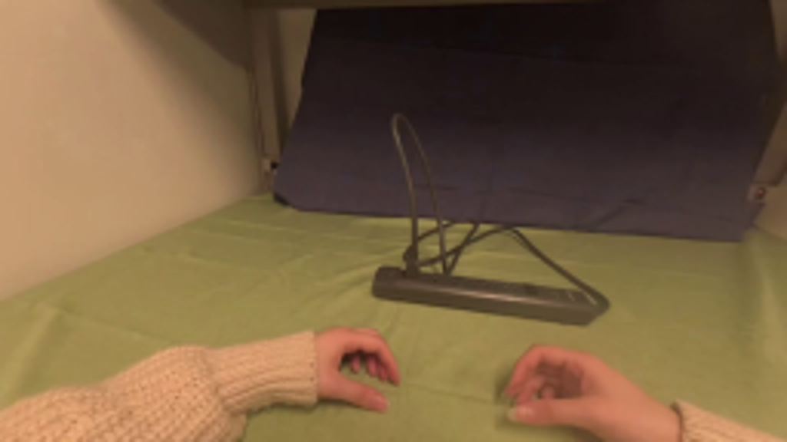
视觉工具实际返回图片 2
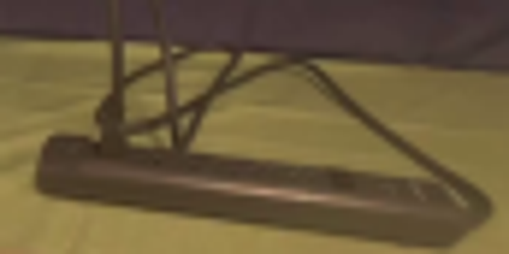
视觉工具实际返回图片 3
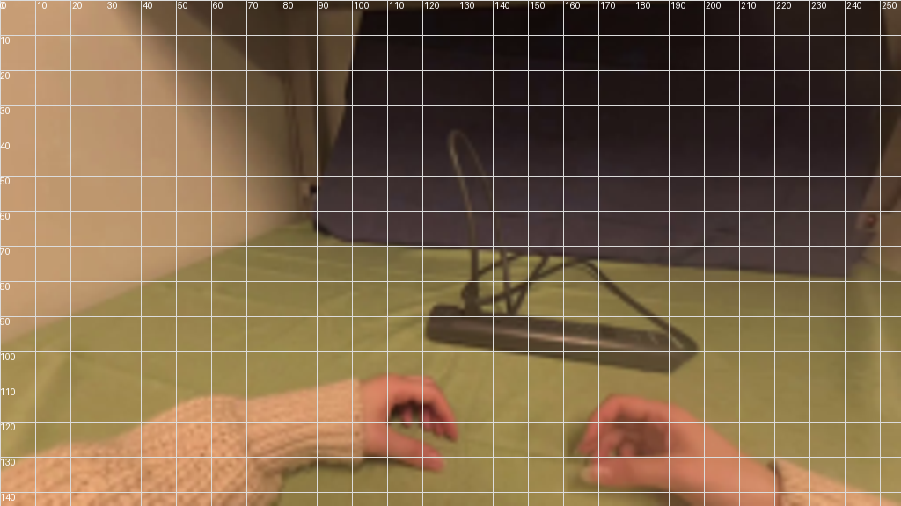
视觉工具实际返回图片 4
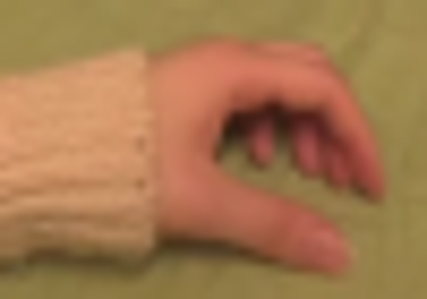
视觉工具实际返回图片 5
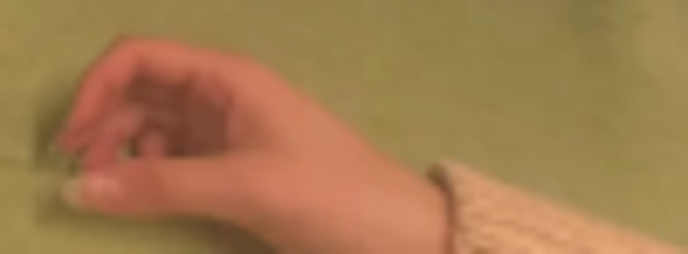
视觉工具实际返回图片 6
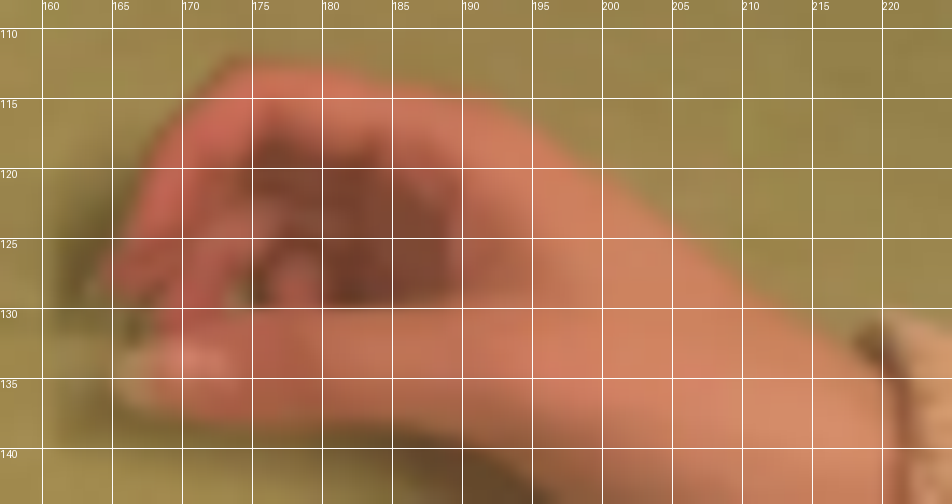
视觉工具实际返回图片 7
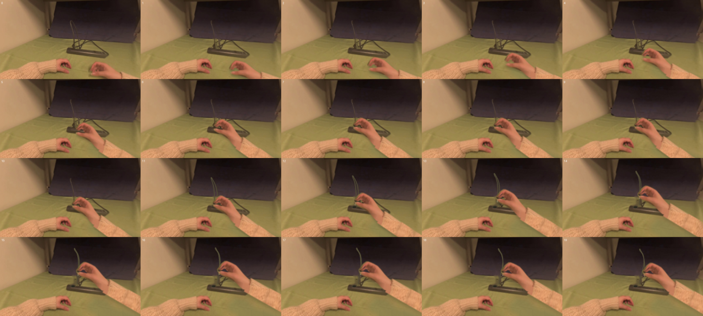
视觉工具实际返回图片 8
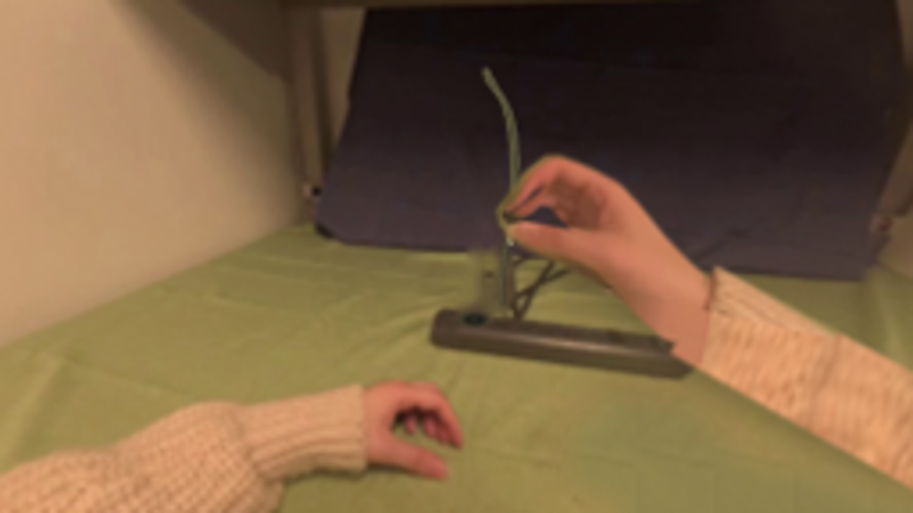
视觉工具实际返回图片 9
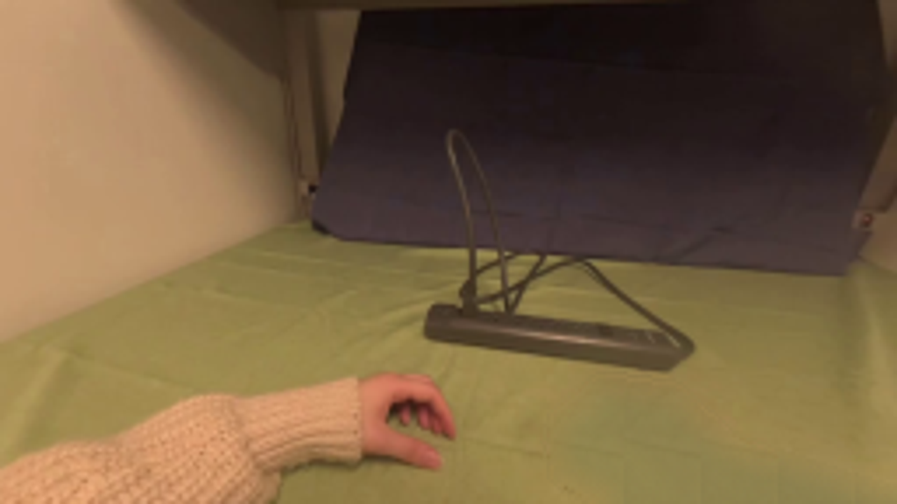
视觉工具实际返回图片 10
视觉工具实际返回图片 11
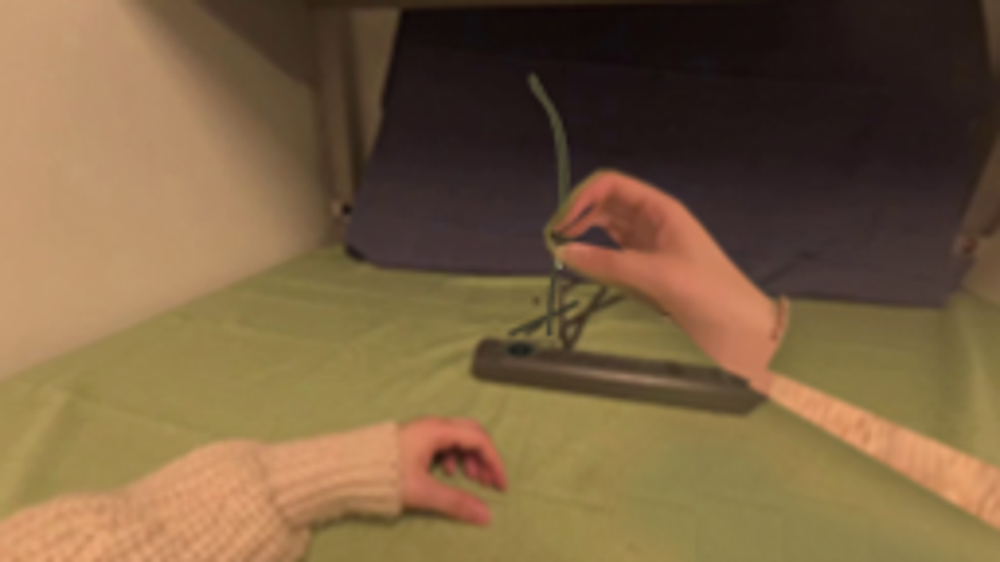
视觉工具实际返回图片 12
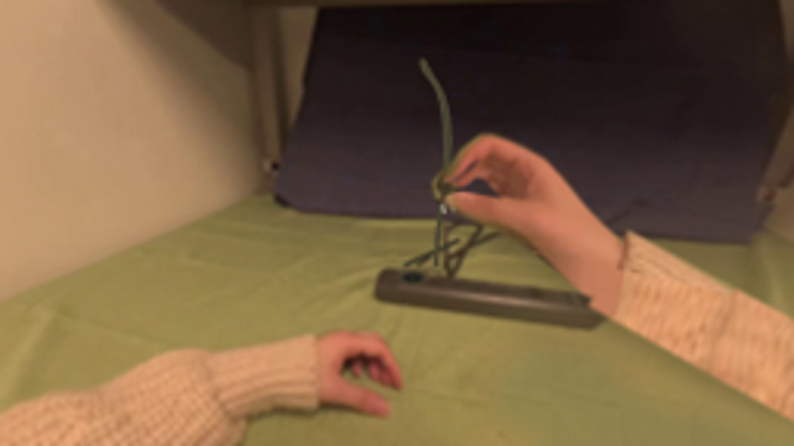
视觉工具实际返回图片 13
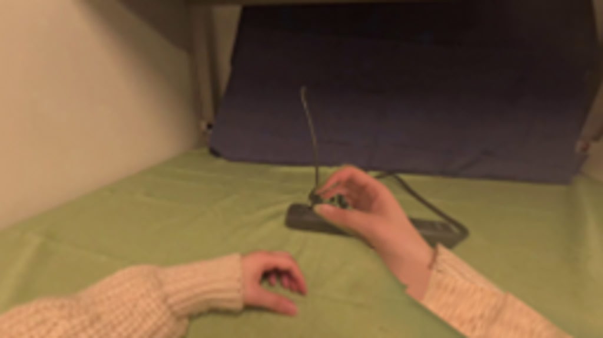
保存候选 4 份；完成命令 13 次；可验证图片返回 13 张。原始 API 响应与完整日志保留在本地。